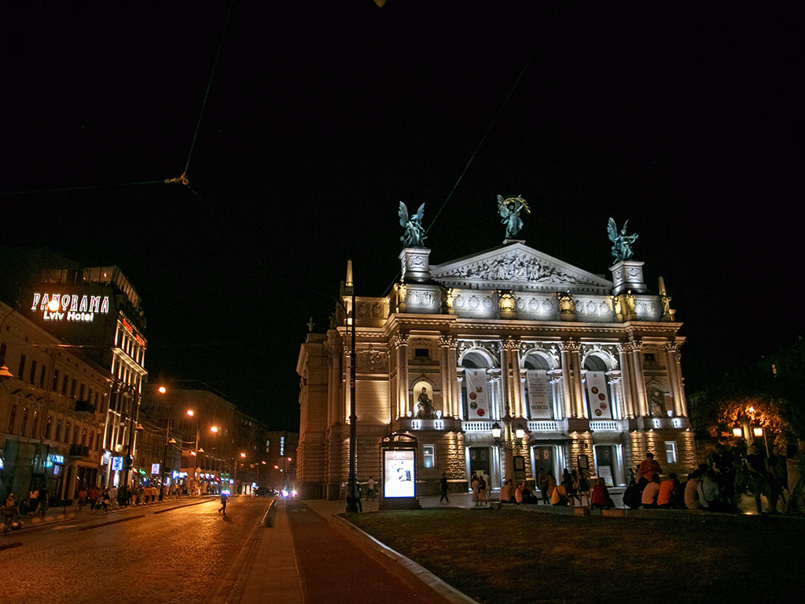

Реєстрація

Площа Ринок і Львівська ратуша
Перші згадки про центральну міську площу датуються далеким 13 століттям. Багато віків вона була центром життя міста. Тут влаштовували культурні заходи, процесії, продавали на ринку овочі, фрукти і квіти, які вирощували місцеві жителі.Офіційно затвердженими символами Львова є герб, великий герб, хоругва Львівської міської ради та логотип.
Статут Львова символами міста визначає також назви чи зображення архітектурних та історичних пам'яток.
До основи сучасного герба Львова покладено герб із печатки міста з середини XIV ст. — кам'яна брама з трьома вежами, в отворі воріт якої крокує золотий лев. Великий герб Львова — це щит із гербом міста, увінчаний срібною міською короною з трьома зубцями, який тримають лев і давньоруський воїн. Прапором Львова є синє квадратне полотнище з зображенням міського герба, обрамлене лиштвою, що складається з жовтих та синіх рівнобедрених трикутників по краях. Логотипом Львова є зображення п'яти різнобарвних веж (зліва — направо): дзвіниці Вірменського собору, вежі Корнякта, міської ратуші, вежі Латинської катедри, дзвіниці монастиря Бернардинів та слоган «Львів відкритий для світу» під ними.

| Показник | Січ | Лют | Бер | Кві | Тра | Чер | Лип | Сер | Вер | Жов | Лис | Гру | Рік |
|---|---|---|---|---|---|---|---|---|---|---|---|---|---|
| Апсолютний максимум 0C | 13,8 | 17,8 | 22,8 | 28,9 | 32,2 | 33,4 | 36,9 | 25,8 | 21,8 | 16,6 | 15,1 | 14,0 | 36,3 |
| Середній максимум 0C | −0,1 | 6,3 | 13,6 | 13,6 | 19,4 | 23,9 | 23,5 | 18,3 | 12,9 | 10,4 | 7,5 | 12,3 | |
| Середня температура 0C | -1,6 | 1,9 | 2,9 | 8,9 | 12,9 | 13,4 | 19,0 | 20,8 | 17,4 | 10,0 | 5,0 | 1,0 | 7,8 |
| Середній мінімум 0C | -6,1 | -4,7 | -1,8 | 2,9 | 5,0 | 8,4 | 12,9 | 14,8 | 6,7 | 5,9 | 1,3 | -2,0 | 3,6 |